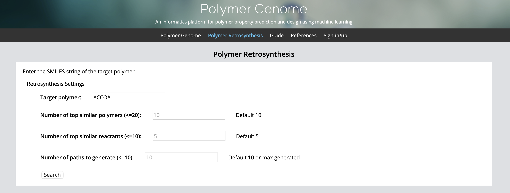
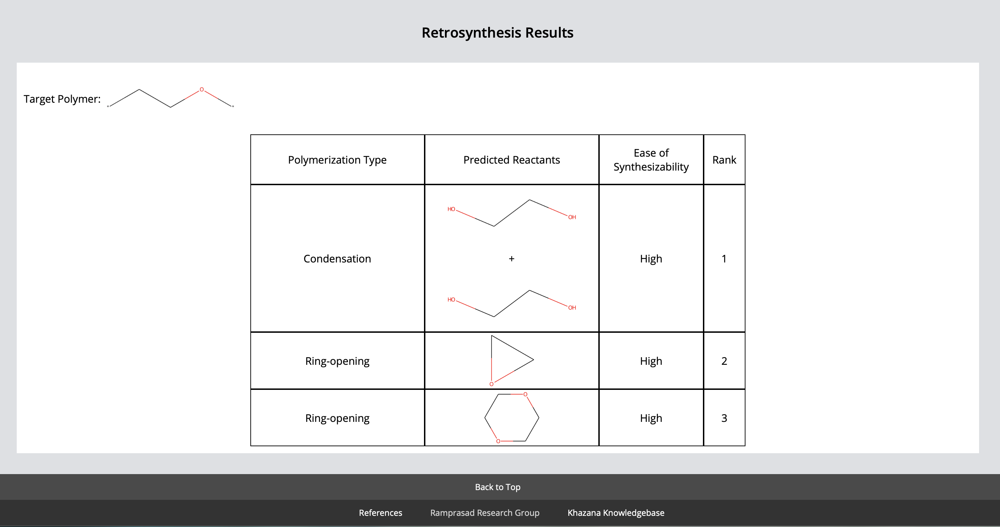
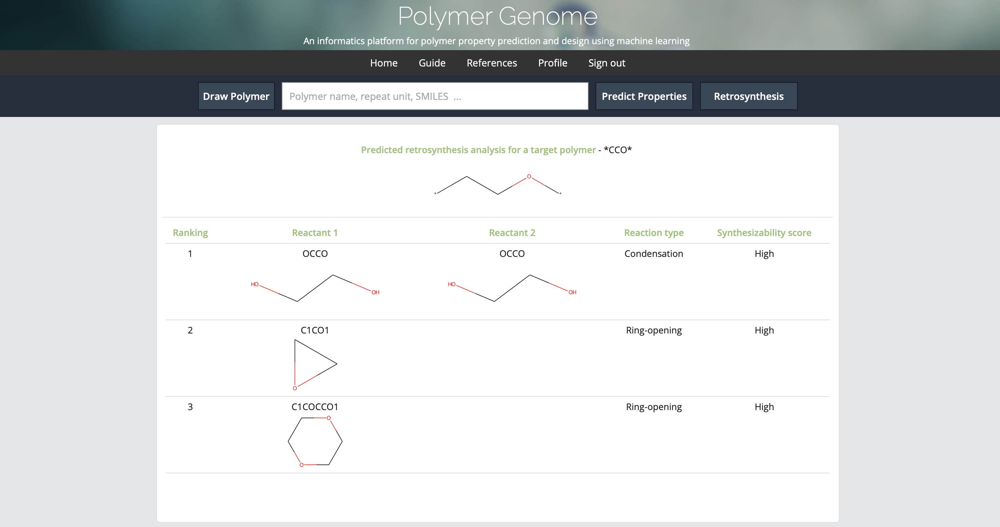
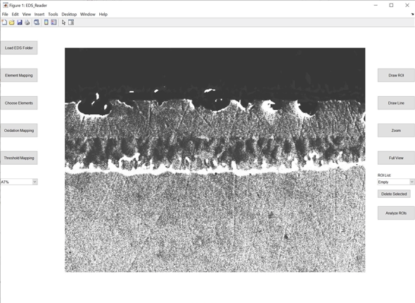
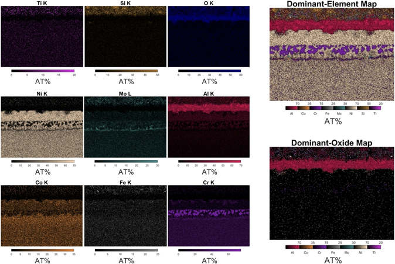
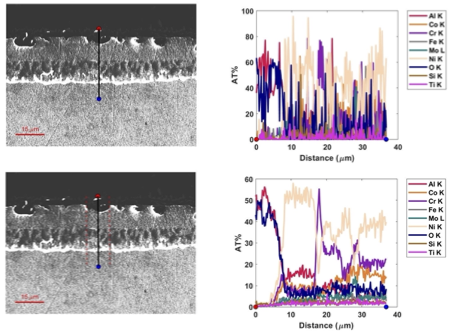
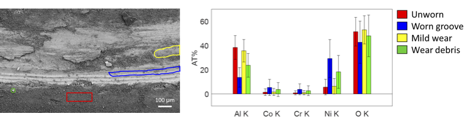
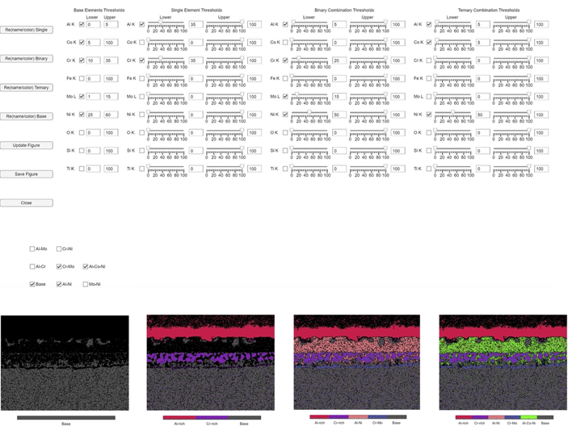

I apologize in advance for image quality, I only used 72 DPI for web images.
Retrosynthesis Website
I would decribe this program as my first useful contribution to the Ramprasad group at GaTech. Lihua Chen (a postdoc in the group and super cool person) designed an algorithm that takes a polymer as input and then outputs predicted reactants and a score indicating the ease to synthesize it. I was initially tasked with designing the front and backend interface for this program.
Users would input a target polymer with the smiles string and user defined variables being passed back to my flask app that interfaced with Lihua's code. I then used rdkit to generate images of the target polymer and predicted reactants, and returned the relative synthesizability score her code generated, with high representing a score > 0.7 on a scale of 0 to 1. After this I used html templates and jinja to append a table to the end of the page.
Tragically, we never used this design, as we wanted to integrate the code with Polymer Genome. Still, I got to learn how to use jinja, and it was great practice for my html/css (you'll notice I was very effective at duplicating the Polymer Genome aesthetic for my original app interface :). My Flask backend was still used, although I had to modify it to return json of the images and scores so Chiho (another cool person/research scientist) could make the table in Polymer Genome.
The last interesting bit about this program was I got to learn how to deploy the backend using kuberetes, openshift, and docker. This was more challenging than I was expecting, but still fun. The hardest part was figuring out how to give the correct user id permissions in the Dockerfile so they would transfer over to the openshift account GaTech set up for me. Shout out to Mark Danielson who was super helpful in teaching me how to do it.
Electron Dispersion Spectroscopy
The first scientific program I wrote was in MATLAB I was a wee little undergrad at Madison doing research on some metal super-alloys. We decided to utilize electron dispersion spectroscopy (EDS) to analyze the chemical compositions of the materials, and Dave Grierson (a visiting scientist at Madison/super cool guy) suggested we analyze the data with our own software. For that reason, we wrote this EDS code.
This is an image of the interface! The program reads in some EDS csv files and then displays a grey image of the sample. The user can then perform an assortment of analyses of the sample. These include:
-
Element/Oxide mapping,
 -
linescans with width-averaging,
 -
region-of-interest analyses,
 -
and, my personal favorite, threshold mapping!

This was my first ever custom program, so it always has a special place in my heart <3. I wrote the code for the interface, the loading of the data, for performing the threshold mapping, converting between atomic and weight percentage, and choosing elements to view data on. Dave and I collaborated on the line-scan code, element mapping, and region-of-interest analysis. Dave also added the ROI list, Full view, and Zoom parts.
It was a useful tool for our EDS analyses. We used the outputs in a number of publications. The source code is on my github page as well for people to use. I would like to publish it, but the work isn't really novel, so maybe I can submit to an open source software journal sometime instead.
In hindsight, I would have preferred to write this software in Python since it is open source. Still, when I wrote this code, I didn't know how to write anything in Python, and only in 2020 did I start making graphic user interfaces in Python with tkinter and Qt5. Dave also didn't know Python, so MATLAB was best suited to the job at the time.
I also would have tried to make the code more user friendly. A lot of the analyses depend on color, which makes it inaccessible to colorblind people. I try to be more concious of that these days. If people were ever interested in it, I'd be happy to add additional improvements though.